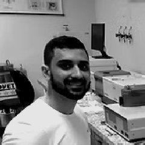

Coordenação

Conselho de Pós-Graduação
Angelo Palmisano, Jeane Aparecida Rombi de Godoy e Antonio Busnardo Filho (docentes); Rosana Lia Ravache (suplente); Marcelo Luiz Perini Tarachuk (discente).
Corpo docente




Discentes em curso
- Alex Sandro Morais do Nascimento
- Allan Augusto Rocha Allan
- Ana Carolina de Oliveira Lima
- Ana Carolina Tonholo Andrade
- Ângela Cristina Goes dos Santos
1 publicação
- 2026 · UMA ABORDAGEM INVESTIGATIVA A PARTIR DO MAPEAMENTO DAS CONDIÇÕES AMBIENTAIS E FÍSICAS DO CÓRREGO DO BARBADO EM CUIABÁ-MT
- Bruno Kimura
Empreendedorismo Gastronômico e Sustentabilidade: um Olhar sobre Restaurantes da Região Metropolitana do Vale do Rio Cuiabá
1 publicação
- 2026 · DESENVOLVIMENTO DE UM INSTRUMENTO PARA AVALIAÇÃO DA SUSTENTABILIDADE EM RESTAURANTES DE CUIABÁ-MT
- Cacio Zanatta
- Charles Fabiano Araújo Quadro
- Cíntia Paulino da Silva
- Claudio Mirrair Farias Donoso Facheti
- Deborah Karen Mansilha Guebara
- Deivis Ceslei Maggi
- Edmar Celestino de Souza Neto
- Emili Sayuri Takimoto
3 publicações
- 2024 · Casarão cotia: uma proposta de hospedagem e conservação em Poconé – MT
- 2025 · Masterplan expansão oeste de Cuiabá
- 2026 · UMA ABORDAGEM INVESTIGATIVA A PARTIR DO MAPEAMENTO DAS CONDIÇÕES AMBIENTAIS E FÍSICAS DO CÓRREGO DO BARBADO EM CUIABÁ-MT
- Fernanda Moreira Rondon Foguel
- Guilherme Brescancim
- Isabel Leticia Machado
- Isabela Machado Pereira Morgado
- Isabella Helwig Alves
- Jassielyne Marchetto
- João Paulo Kayoli
- Jociani Dalacosta Fávero
- Jonath Elias Duarte
- Jorge Luis Almeida de Barros
- Kethylin Vanessa Melo
- Lauro Boa Sorte Carneiro
- Lucas Vicente Nunes
- Marcos de Sá Fernandes da Silva
- Maria Augusta Fonseca Dias Ribeiro
- Maxwel Pires Pedroso
- Mayara Kauany Silva Fagundes
2 publicações
- 2025 · Espaços Livres Públicos: estudo de caso do Parque Municipal Ilto Ferreira Coutinho em Tangará da Serra - MT
- 2026 · A CONSTRUÇÃO DA PAISAGEM CULTURAL NOS ESPAÇOS LIVRES URBANOS: UM ESTUDO COMPARATIVO DAS PRAÇAS BIÉ E EDERSON NOBRE DE AMORIM EM VÁRZEA GRANDE - MT
- Morgana Pereira Lopes da Silva
- Nátali de Paula
3 publicações
- 2024 · Análise da Expansão Agrícola e Desflorestamento na Amazônia Legal
- 2024 · Paisagem, Território e Cultura: Estudo de caso do grupo de dança de Siriri Flor de Atalaia
- 2026 · A CONSTRUÇÃO DA PAISAGEM CULTURAL NOS ESPAÇOS LIVRES URBANOS: UM ESTUDO COMPARATIVO DAS PRAÇAS BIÉ E EDERSON NOBRE DE AMORIM EM VÁRZEA GRANDE - MT
- Nycolas Martins de Araújo Braga de Moraes
- Otavio Henrique Ribeiro França
- Paulo Franco Teles de Oliveira
- Paulo Henrique Soares de Oliveira
- Priscila Tábida Silva Enoré
4 publicações
- 2023 · AVANÇO DE BIOCONSTRUÇÕES NO ESTADO DE MATO GROSSO: INVESTIGAÇÃO DE ARQUITETURA COM SOLO
- 2023 · Frequency analysis of extreme air temperature events in an urban center in the Brazilian savanna
- 2024 · Cidades Inteligentes e Sustentáveis
- 2024 · Sustentabilidade e os sistemas construtivos para Habitação de Interesse Social em Cuiabá-MT
- Reginete Maria Rondon da Silva
- Renan Antônio Lorenzon Rigotti
- Tarsila Athena Borba Oliveira da Cunha Fernandes
- Thaiz Freitas Pessoa
- Vandréia Cristine Fernandes Santos Pironnet
- Vanessa Knutzen Lourenço
1 publicação
- Vicente Paulo José da Silva Justo
- Viviane Lucia de Quadros
Nenhum resultado.
Pós-doutorandos
- Allan Leon Casemiro da Silva
Cidades Inteligentes: Aplicabilidade dos Conceitos no Planejamento Urbano Brasileiro
16 publicações
- 2024 · Análise das Políticas de Adaptação Climática no Rio Grande do Sul
- 2024 · Ações do Governo Federal no apoio à reconstrução do Rio Grande do Sul/Brasil:
- 2024 · Economic Development and Sustainability in The Amazon: A Big Data Analysis Based on The Triple Bottom Line
- 2024 · From Smart and Sustainable Cities to Urban Planning: A Conceptual Cluster Analysis
- 2024 · Green Cities, Gray Realities: The Rhetoric of Sustainability and Urban Segregation
- 2024 · Smart Cities for Urban Planning: A Bibliometric-Conceptual Analysis
- 2024 · The Geography of Inequality: Socio-Spatial Segregation and Climate Vulnerability in Brazilian Urban Peripheries
- 2025 · AGRICULTURA FAMILIAR: TERRITORIALIDADE E DEMOCRATIZAÇÃO DO TERRITÓRIO NA FRONTEIRA
- 2025 · Conceito multidimensional para o planejamento urbano de cidades inteligentes
- 2025 · Inteligência artificial e seus custos ocultos
- 2025 · Segregação socioespacial e vulnerabilidade climática nas periferias urbanas
- 2025 · Urbanização, desigualdade e raça
- 2026 · Cidades e envelhecimento: proposições para uma cidade inteligente sensível à idade
- 2026 · Cities and aging: propositions for an age-sensitive smart city
- 2026 · Formalizar Sem Integrar? Regularização Fundiária, Cidadania e Apropriação Social no Descompasso entre a Cidade Informal e a Cidade Formal
- 2026 · Territórios em disputa na Amazônia Legal: conservação, fragmentação e motores de perda da biodiversidade em Mato Grosso
- Graziella Plaça Orosco de Souza
Cartas para o Futuro: Preservando o Legado Cultural por Meio da Educação em Museus
2 publicações
- Maurício Dias Marques
Estudo da Inter-Relação de Fatores Que Podem Contribuir para a Adoção da Construção Civil Sustentável
6 publicações
- 2024 · Alternative materials in civil construction: a comparison between the use of conventional and recyclable materials, bricks and concrete for sustainable constructions
- 2024 · Cidade Ideal e Cidade Real: Uma reflexão sobre cidades sustentáveis
- 2024 · Transforming Civil Construction: Environmental seal as a mark of sustainable commitment
- 2025 · CONSTRUÇÃO SUSTENTÁVEL EM MATO GROSSO: PARADOXOS ENTRE NORMATIVIDADE E EFETIVIDADE
- 2026 · Resíduos da construção civil e as contradições da sustentabilidade
- 2026 · SUSTENTABILIDADE, NORMATIVIDADE E PRÁTICA NA CONSTRUÇÃO CIVIL EM MATO GROSSO
- Ricardo Miranda dos Santos
Indicadores Ambientais Como Ferramenta para a Sustentabilidade Urbana: Estudo de Caso na Região Metropolitana do Vale do Rio Cuiabá (Rmvrc)
2 publicações
- Rodrigo Vitorino Assumpção
Cidade Contemporânea e as Cidades Invisíveis: uma Leitura a Partir do Teste At-9
3 publicações
Egressos
Página dos egressos, com o mapa dos territórios estudados
- Eliane Augusta Gonçalves de Souza
4 publicações
- 2024 · Mobilidade Urbana em Cuiabá-MT: reflexão a partir da distribuição dos pontos de ônibus
- 2025 · Arborização urbana e desigualdade ambiental: uma revisão sistemática da literatura
- 2026 · Data for: A produção desigual do espaço urbano e a (i)mobilidade urbana em Cuiabá
- 2026 · Expansão urbana em Cuiabá-MT
- Priscila Wolff Sampaio Santiago
1 publicação
- Rafaela Alves Bernardes
- Tatiane Cristine Silva Kono de Oliveira
Matriz de Maturidade Bim na Administração Pública Municipal: Adaptação e Aplicação Como Instrumento de Gestão Estratégica
1 publicação
- Taynara Barreto Macedo
1 publicação
- Thais Lara Pinto de Arruda
- Frederico Cezar Giuberti Sucena Rasga
O Templo Católico: da Transcendência Mística Medieval À Imanência Racional Moderna
- Geisianie Arruda de Almeida
- Leily Francy Leite de Oliveira Monteiro Silva
- Marcelo Luiz Perini Tarachuk
3 publicações
- 2023 · Aproveitamento múltiplo do Manso e suas consequências na alteração da paisagem de Chapada dos Guimarães / MT
- 2024 · Amazônia em risco: desafios econômicos, ambientais e estratégias para um futuro sustentável
- 2024 · Paisagens fragmentadas: aspectos do processo de transformações da estrutura da paisagem na Bacia do Alto Rio Cuiabá (1985 e 2022)
- Rafaela Ferreira Rosso
5 publicações
- 2023 · Frequency analysis of extreme air temperature events in an urban center in the Brazilian savanna
- 2024 · Inadequação de domicílios no Brasil: uma reflexão sobre seus conceitos e indicadores
- 2024 · Planalto dos Alcantilados (MT) como barreira física para integração entre municípios: Uma reflexão pela mobilidade urbana
- 2025 · Moradia Digna em Cuiabá-MT
- 2025 · Moradia Digna em Cuiabá-MT: uma análise a partir dos microdados da PNADc IBGE
- Victória Ferreira Galvão
- Yuri de Souza Lopes
Planejamento Integrado dos Parques Urbanos: Estudo de Caso de Cuiabá-MT, Várzea Grande-MT e Chapada dos Guimarães-MT
- Marilene Oliveira Santos
- Rosivane Fernandes
1 publicação
- 2021 · INFRAESTRUTURA VERDE APLICADA A DRENAGEM URBANA: CÓRREGO TRÊS BARRAS
- Angelica Pereira Pinheiro
- Brunna Camargo Battaini
- Geovane da Silva Moraes
2 publicações
- 2021 · PROPOSTA PARA INTERVENÇÃO EM ÁREAS E APP: ESTUDO DE CASO DA COMUNIDADE DO CARRAPICHO
- 2023 · Urbanização em assentamentos precários: o caso do Assentamento Carrapicho em Várzea Grande – MT
- Hortência Santos Teixeira Bonfante
- Poema Bidarra Oliveira
2 publicações
- Abelar Santana Moraes
1 publicação
- Adriana Fátima Dussel dos Santos
- Daniel Silva Campos
1 publicação
- Elson Eduardo de Oliveira Paulo
- Joel Marcos Gatto
2 publicações
- Willian Jonas Mininel
- Andrieli Caroline Lima
1 publicação
- Cezar Clemente Pires dos Santos
- Fabiana Zili Salmoria
4 publicações
- 2022 · Cities back to the river: the neglect of urban PPAs in the Cuiabá River Valley Metropolitan Region - RMVRC/MT
- 2023 · Effects of a disordered urbanization: "the cities with their backs to the river" in the Cuiabá River Valley Metropolitan Region - RMVRC/MT
- 2023 · Riverside Communities: socio-spatial aspects along the Tapajós River
- 2023 · Urbanização em assentamentos precários: o caso do Assentamento Carrapicho em Várzea Grande – MT
- Franciele Cavalheiro Novack
Nenhum resultado.